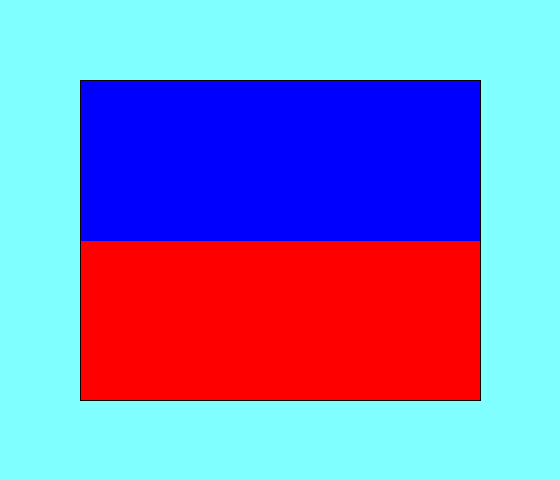
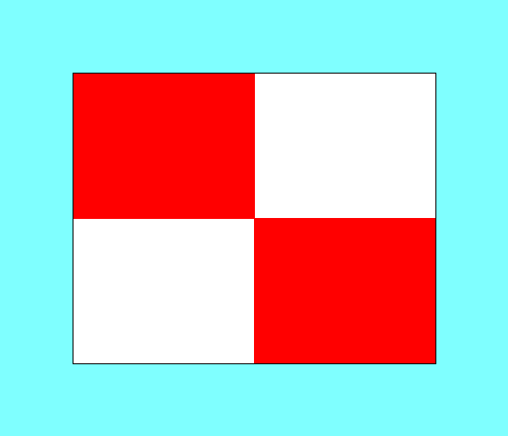
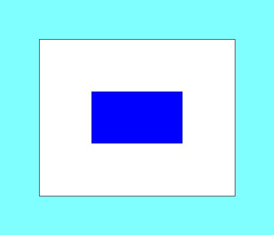
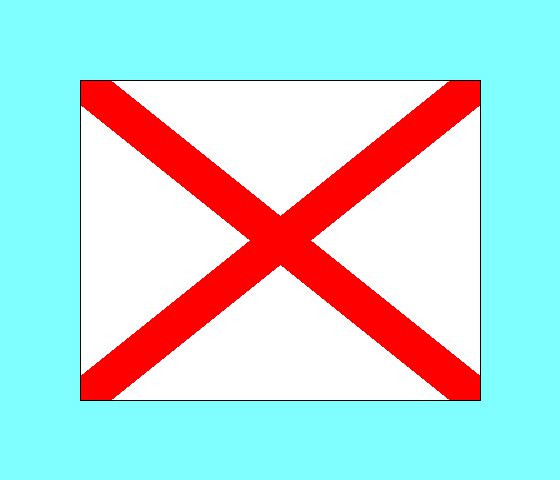
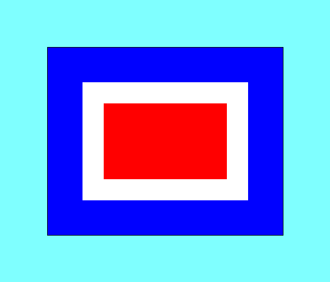
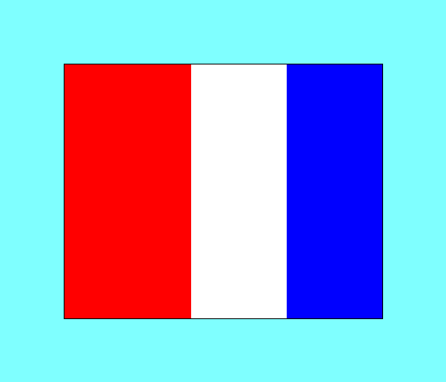
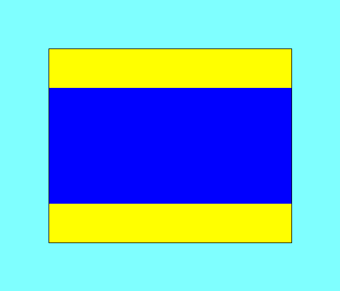

Common race management and safety flags used by race officers
and committee boats during racing and tidal sailing at WKSC.

P
Preparatory Signal

U
U Flag Rule Applies

S
Shortened Course

V
Monitor VHF Radio

W
Lifejackets Required

T
Finish Between Committee Boat and Mark

D
Launching Area Open